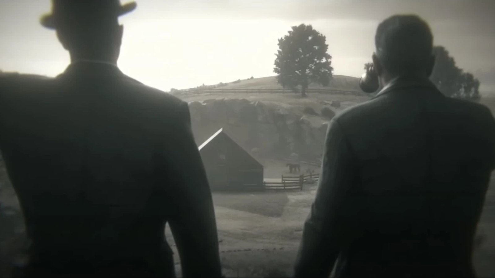
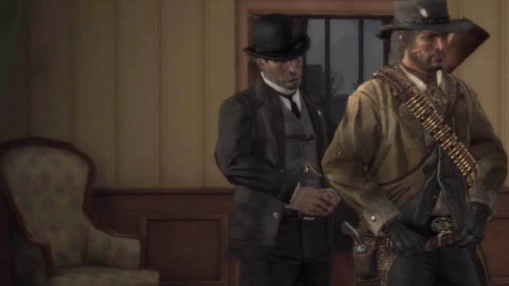
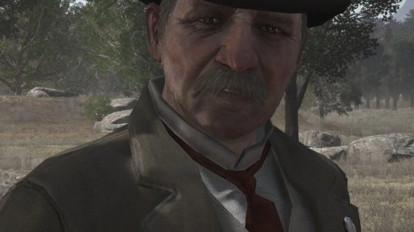
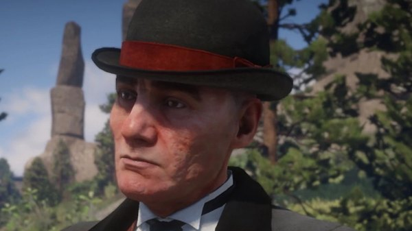
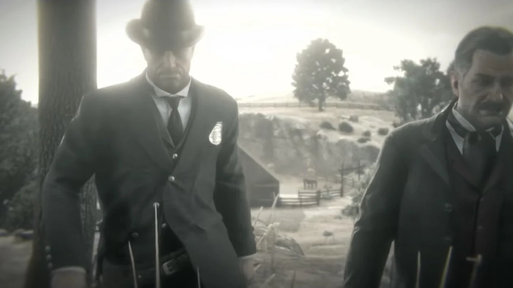

Character · Bureau of Investigation
Archer Fordham
Archer Fordham is an agent of the Bureau of Investigation in Red Dead Redemption, and Edgar Ross's partner on the case against the Van der Linde gang.
He is present at nearly every step of John Marston's coerced hunt, from the initial blackmail to the attack on Beecher's Hope.
- Affiliation
- Bureau of Investigation
- Role
- Federal agent
- Works with
- Edgar Ross
- Status
- Alive at the end of RDR1
- Games
- Red Dead Redemption, Red Dead Redemption 2
Biography
The case against Marston
Fordham and Ross take John's wife and son into government custody and send him west to bring in his former associates. Fordham handles much of the practical side of the operation: the paperwork, the transport, the coordination with the army and the local law.
Alongside Ross
Fordham is the more measured of the two agents. He raises objections to Ross's methods and questions how far the operation should go, but he carries out the orders. He is with Ross in West Elizabeth for the hunt through Tall Trees, and at Beecher's Hope when the army moves on the ranch.
In Red Dead Redemption 2
Fordham appears in the epilogue of Red Dead Redemption 2, alongside Ross, in the sequence where the two agents take an interest in Micah Bell. The appearance places both men on the gang's trail years before the events of the first game.
Relationships

Edgar Ross
His fellow Bureau agent, and the one who sets the terms for John.

John Marston
The man the Bureau coerces into hunting his former gang.

Andrew Milton
The Pinkerton agent who pursued the same gang a decade earlier.
Behind the scenes
Archer Fordham appears in Red Dead Redemption (2010) and in the epilogue of Red Dead Redemption 2 (2018).
Gallery
